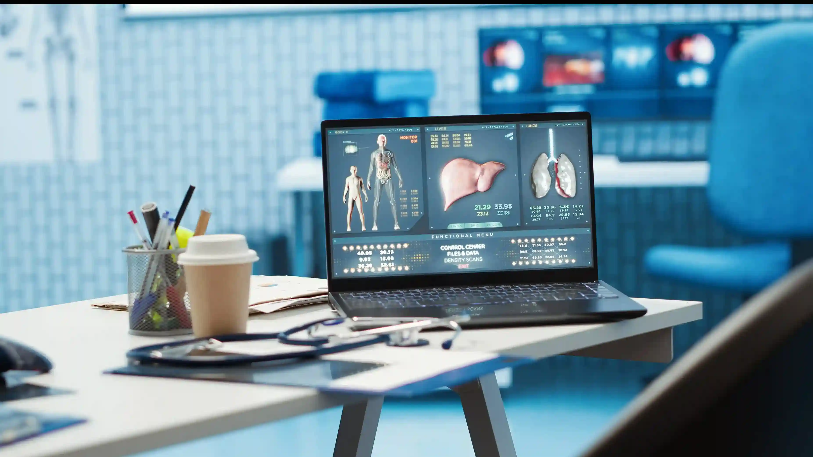

LATEST
New study: AI-driven early detection of cardiac anomalies shows 98% accuracy...
FEATURED ARTICLE
The Future of Precision Medicine: Bridging Tech & Care
Explore how genomic sequencing and AI-driven diagnostics are transforming personalized patient treatments in 2026.

Dr. Julian Voss
Head of Clinical Research
12 Min Read
1.2k Views
0
Research Papers0
Expert Authors0
Specialties

New Research Paper Published